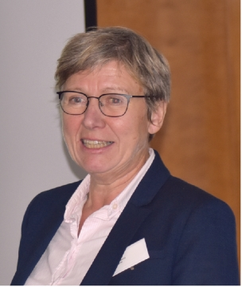
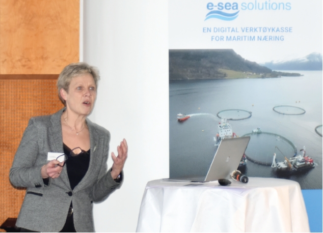

–
Det er viktig at alle som tar del i
operasjonene får opplæring i både
hygiene og fiskevelferd, og kan
gjennomføre risikogjennomgangen
som må dokumenteres. Dette gjelder
også for nytt utstyr. Snakk med de
som har noe erfaring, registrer avvik
og finn årsaken til avvikene. Fokus og
forbedringer innen håndtering av fisk
gir god velferd og god økonomi, sa
Gjefsen.
Advokatene Lars Selmar Alsaker
og Halfdan Mellbye fra SANDS, hadde
en gjennomgang av gjeldende regel-
verk i forhold til hvor ansvaret for fisk
og anlegg ligger
–
fartøy vs oppdretter,
under ulike operasjoner. Også pro-
sessene rundt utslipp av behand-
lingsvann fra brønnbåt, samt den
siste høringen på tema ble belyst.
–
Når nye forskrifter gjøres
gjeldende
er det viktig at de er
presise, samt at de baseres på
kunnskap. Myndighetene må kon-
tinuerlig oppdatere kartene som
næringen skal følge og implementere
ny kunnskap på detaljnivå etter hvert.
Kvalitetssikring av data/innholdet i
kart er også viktig. Der har vi sett
flere mangler. Det er f.eks. ingen
fastsatt definisjon eller fastsatte
kriterier på hva et rekefelt er, og da
kan det bli temmelig tilfeldig hva som
kartfestes som et rekefelt. Myndig-
hetene bør også klargjøre at reglene
kun gjelder gytefelt, og at dette er
noe annet enn gyteområder, påpekte
Alsaker.
Nye regelverk for
ensilasje og servicefartøy
Aud Skrudland, seniorrådgiver og
veterinær i Mattilsynet hadde stort
fokus på hvordan fartøy tilknyttet
havbruksnæringen reguleres. Hun
uttrykker at Mattilsynet er bekymret
for trafikken til fartøy som tar opp
dødfisk i flere anlegg, og påpekte at
fartøyene, ettersom de håndterer
eller frakter biprodukter, ligger
under biproduktregelverket. Hun sa
samtidig at dette regelverket er
tilpasset landdyr, og at det er om-
fattende. Kystrederiene vil fremover
ha en tettere dialog med Mattilsynet
vedrørende dette.
Skrudland påpekte samtidig et
behov for mer krav for driften til
avlusningsfartøy og servicebåter.
Mattilsynet mener disse fartøyene i
større grad bør ha det samme ramme-
verket som brønnbåtene i forhold til
hygiene og sporbarhet. Hun var også
klar på at alle fartøy med utstyr som
håndterer fisk har et ansvar for
fisken gjennom dyrevelfredsloven.
–
Vi har allerede varslet overtred-
elsesgebyr til rederier i tilfeller der vi
mener det er vist uaktsomhet som
har medført lidelse for fisk. Når
fisken dør under behandling fordi den
er svekket, kan det være brudd på
dyrevelferdsloven, sa Skrudland.
Erfaringer fra tilsyn
Fiskeridirektør Liv Holmefjord, tok
for seg Fiskeridirektoratets rolle og
samhandling med fartøysnæringen.
Deres siste tilsynskampanje gikk på
brønnbåtene og forebygging av
rømmingshendelser. Her ble det
gjennomført 18 tilsyn, med mål om
kartlegging av blant annet
risikovurderinger, avklaring av an-
svarsforhold og opplæring av mann-
skap. Holmefjord fortalte at det ble
avdekket mangler i forhold til ansvar,
eksempelvis ved at skipper går ut fra
at kun oppdretter var ansvarlig for å
stille med egnet sikring til slange
under lasting av fisk, eller at kun
oppdretter var ansvarlig for at
rømmingshendelser skulle meldes.
–
Fokus på rømming har i flere
tilfeller vært fraværende, men
flertallet av virksomhetene har
ønsket tilsyn velkommen, og har
samarbeidet med mål om å forbedre
internkontrollen. De fleste har et
ønske om å etterleve regelverket, og
setter pris på tilbakemeldinger. Det
har også vært noen få enkelt-
hendelser der personer ikke ser
poenget med å bruke tid på intern-
kontroll og forebyggende tiltak rettet
mot rømming. Vår hovedoppfatning
på tross av en del funn er at
rederiene generelt har god intern-
kontroll, summerte Holmefjord.
Fiskeridirektøren kommenterte
også at de nå skal gjennomføre
oppfølging av enkeltaktørene, og
utarbeide rapport med forbedrings-
punkter både i næringen og internt,
både på regelverket og gjennom-
føringen av tilsyn.
Seniorrådgiver Aud Skrudland frå
Mattilsynet, etterspør strengere regelverk
for ensilasjefartøy, servicebåter og flåter.

Fiskeridirektør Liv Holmefjord, fortalte Fiskeridirektoratet opplevde at brønnbåtene generelt
har gode IK-systemer.
